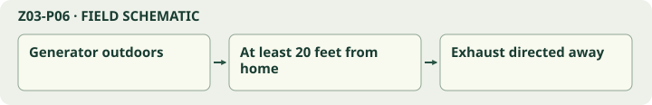

Z03-P06 · Fire and ignition · New manuscript
Place a portable generator outdoors
Plan generator placement that keeps exhaust away from the occupied building.
When it applies · Household portable fuel-powered generator during a power outage.
Equipment · Generator instructions, outdoor location and working CO alarms appropriate to the home.

Actions
- Locate a suitable outdoor position at least 20 feet from the home. Direct exhaust away from the home and other occupied buildings.[C06]
- Keep the generator out of the garage, porch enclosure and other occupied or partially enclosed spaces. Follow the manufacturer and a qualified electrician for connection requirements.[C06, ED]
- If CO is suspected, get to fresh air immediately and call emergency services.[C07]
Verify · Check the path from the outlet to doors, windows and vents. Reassess if the location or direction changes.[C06, ED]
Stop or change course · If you cannot provide the outdoor location and separation, leave the generator off.[C06]
Evidence and editorial notes
- C06 · CPSC · CPSC Warns of Generator, Carbon Monoxide and Fire Hazards Ahead of Hurricane Season (2026 seasonal agency guidance)
- Section: Prevent CO poisoning > Portable generators · Conditions: Portable fuel-driven generator during an outage
Support: Use outdoors at least 20 feet from the home with exhaust directed away from buildings.
Limitations: Wind eddies, overhanging eaves, and open windows can still draw exhaust toward occupied structures. · Conflicting evidence: None; 20 ft is a minimum floor, not a guarantee in enclosed alleys.
Editorial note: Anchored numeric separation rule for portable generators only. · Specialist reviewer: Electrical and carbon monoxide safety
Primary source · checked 2026-11-24 - C07 · CPSC · Carbon Monoxide Fact Sheet (current web edition)
- Section: CO poisoning symptoms; what to do if suspected · Conditions: Suspected carbon monoxide exposure
Support: Escape to fresh air immediately and contact emergency services. Symptoms can include headache, dizziness, nausea and confusion.
Limitations: CO is colorless and odorless; symptoms mimic viral illness or altitude fatigue and can incapacitate sleepers without waking. · Conflicting evidence: None; aligns with CDC-CO.
Editorial note: Standard CO emergency stop condition across Z02 and Z03. · Specialist reviewer: Carbon monoxide safety and emergency medicine
Primary source · checked 2026-11-24
Source lineage · CPSC portable generator guidance; new manuscript · Classification · New manuscript.